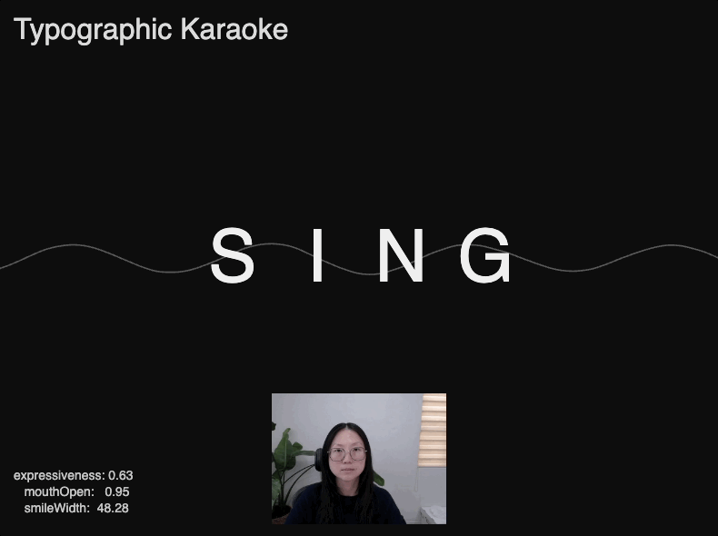
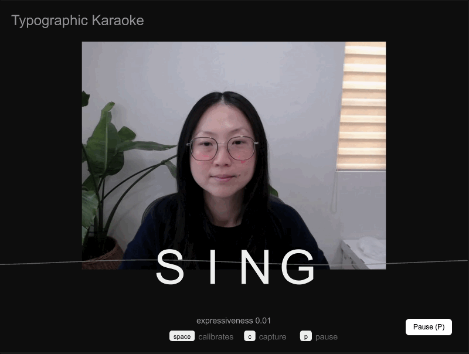
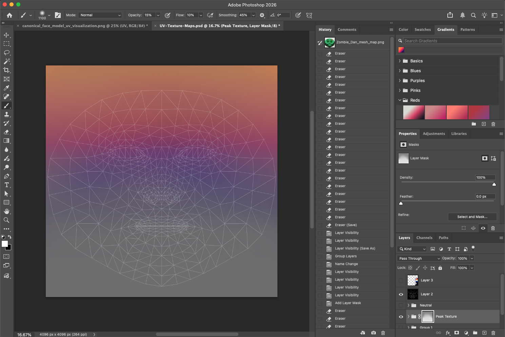
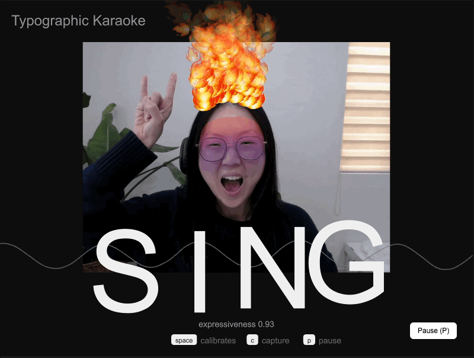
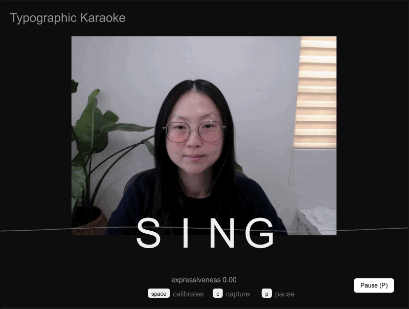
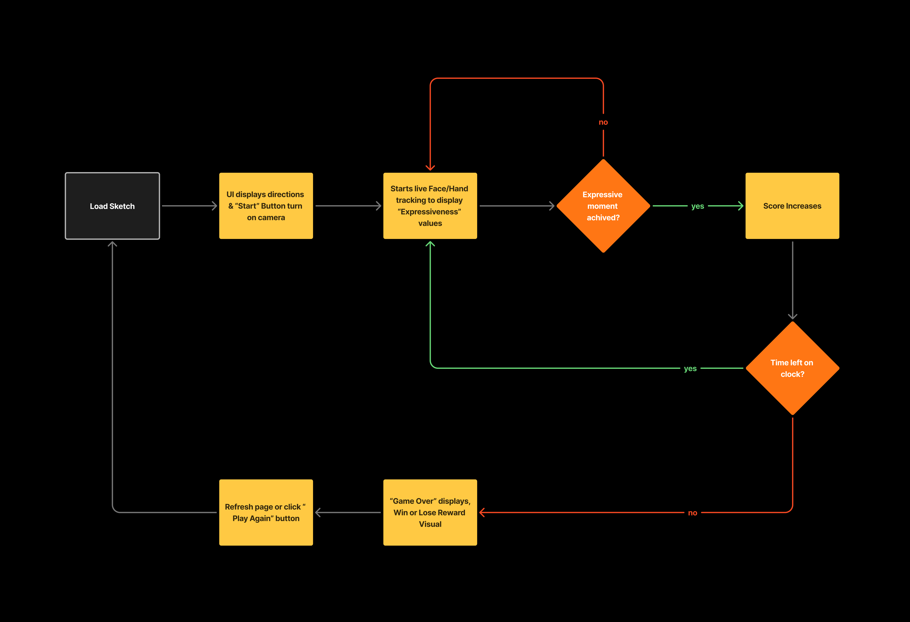

🎤 Final Prototype
🔗 Link to: ML5JS Sketch
✨ Calling all Karaoke-Lovers
For my prototype, I thought how it would be a fun way to have a personal karaoke room right in your pocket. Initially inspired by my husband, I think about how much joy it would give him to have instant access to karaoke in a heartbeat. Instead of optimizing for “good singing,” like traditional karaoke experiences, I considered how Typographic Karoke creates a spontaneous, private performance that turns facial expression into a delightful interaction. The interface becomes a personal way to de-stress, practice some favorite songs, and have fun with playful self-expression without needing a venue or a group.
Technical Implementation: Dialing into Expressiveness

Considering how this experience could scale, I wanted to set an overall expressiveness value. It had to be inclusive of a range of face types, a unique neutral baseline, and camera conditions. I implementing a "space" bar interaction to calibrate a neutral starting value (expressiveness = 0), so anyone could try this experience. By capturing an initial neutral baseline, smoothing out face tracking points, and mapping the mouth width/heigh ranges into a personalized start value, the system becomes more flexible and more importantly, social.
🎭 The Good


Initially, I had a lot of fun skektching and mood boarding ideas quickly, then painting the UV textures in photoshop. When I added the texture masks as expressive “skin” overlays, that's when the exprience actually felt really fun. I had a blast painting the filters and tweaking when each filter appeared/dissapeared. That really made a difference to the exprience with a clear look and playful interaction. I found myself laughing a lot by myself while testing & it was quite a bit of fun!
🔥 The Bad + Ugly

Troubleshooting the emoji flames was kind of awful. What seemed like a simple visual choice turned into a chain reaction of font glyph support issues, rendering inconsistencies, and time-consuming debugging. I ended up going from using a text-based emoji to using an image-based one. It was a clear reminder that delightful ideas can spiral and go down a rabbit-hole quickly, and that sometimes the best move is choosing a simple and reliable technical path so the prototype can actually ship.
⏳ If I Had More Time
- Add 1 additional gesture-triggered effect with another “performance” trigger.
- Create a third UV texture state (low valence) and tune for a third "expressiveness" value.
- Improve robustness across lighting conditions, occlusion, and camera placement.
- Design a lightweight onboarding sequence that teaches Capture, Pause, and Calibration in context.
- Add a performance mode UI that fades controls and emphasizes the stage.
💡 Learnings + Takeaways

- Calibration for tracking facial landmarks + smoothing the interpolation is key groundwork for stable ML-driven interactions.
- Emoji-based visuals are fragile due to font glyph coverage and rendering differences.
- Creating minimal yet effect start/end states like Calibrate, Capture and Pause help with a better entry point and privacy/permissions, especially when dealing with video/image data consent. No one wants to try an experience that feels clunky or invasive.
- ML edge cases show up immediately with occlusion, depth clipping, and distance from camera. Good to consider for future experiences with the face mesh and hand gesture models.
- Performance interfaces work best when feedback is immediate, balanced between legible/subtle delight, and rewards to increase long term engagement.
Thank you for everything, I learned a lot and had fun learning how to code!
💙
✍️ Appendix Docs + References
🔗 Link to:


